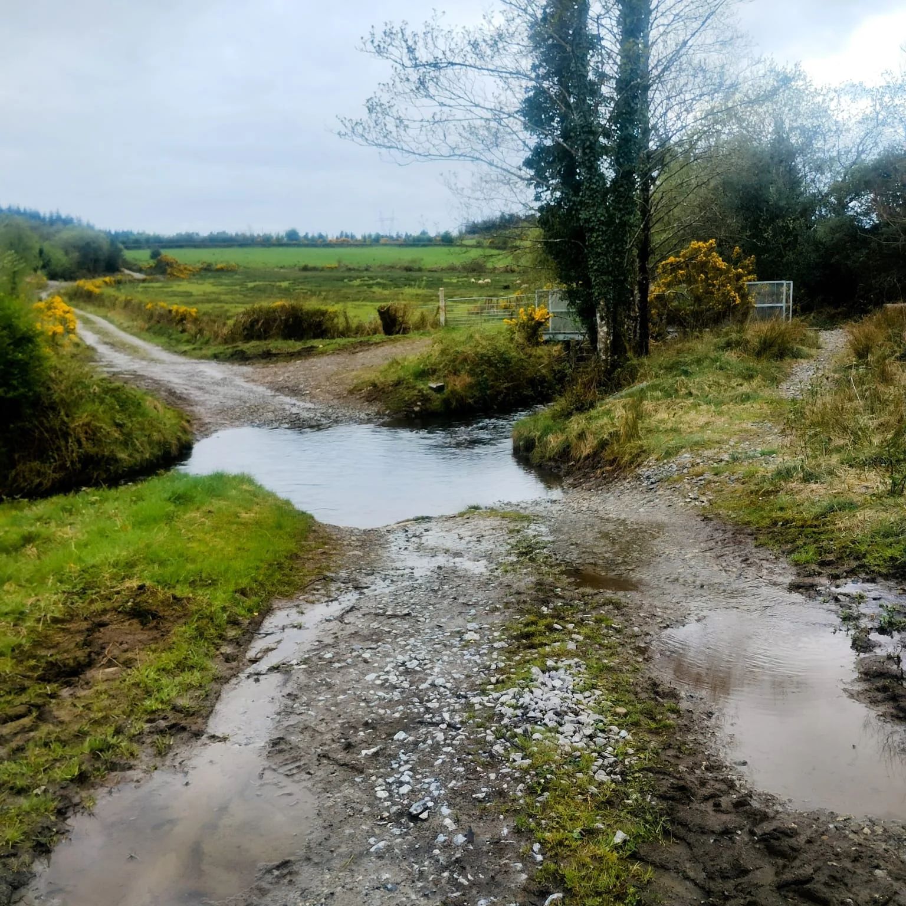

Tulla
Tulla, in Irish “An Tullach”/ “An Tulaigh” means a mound or a hillock. In the electoral division of Ballynagar the townland is 162.99 acres or 65.96 hectares in size.
The population recorded in the 1841 census for Tulla was 119 people with 23 inhabited houses and 1 uninhabited. The 1851 census had 46 people and 9 inhabited houses. The 1840 maps suggested there were thirty plus houses or outbuildings in the central part of the village including Cunnane’s forge. In the 1847-64 Griffith’s Valuation there were 6 households and 4 landholders. In the 1901 census there were 5 residences and 22 inhabitants and in the 1911 census it had 5 residences and 17 inhabitants.

Paddy Fitzgerald (1941 – 2023) was born in the townland along with two of his brothers. His mother was Annie Mahon from Tulla, a noted musical family and his father was Martin Fitzgerald from Bodyke Co. Clare a house builder and for some period was chairman of Éire Óg Athletic Club in Moyglass. In 1946 the family moved to the Bodyke/Ogonnelloe area and four more children were born. In 1959 Paddy and one of his brothers emigrated to Australia, eventually settling in Melbourne. In 1964 the remainder of the family including the parents joined them in Melbourne. Paddy and his brothers Joe and John plus other family members became hugely influential in the traditional Irish music scene in Melbourne, another example of the great musical heritage of our parish. Listen to an interview with Paddy recorded in 2019 here.
Below is a recording of Joe Fitzgerald singing about the formation of the GAA in Shortt’s Bar Feakle in 2019 (recorded by Geert Janssen).
Tulla borders Ballinlough, Ballycorban, Commons West, Lecarrow South and Loughpark.
Map
Placenames
| Name | Type | Notes |
|---|---|---|
| Hackett’s Field | field | |
| Tommy Farrell’s | field | |
| Mahon’s Field | field | |
| The Big Field | field | Also given as “Michael Murray’s”. |
| Tommy Madden’s | field | |
| Mahon’s Well | well | This well had a name but couldn’t recall it, “Tobar na …”. |
| Hedge School | other | |
| Chooseys | field | Traveller’s used to settle here. |
Houses
| Name | Notes |
|---|---|
| Hackett’s House | |
| Farrell’s House | Tommy Farrell. |
| Mahon’s House | |
| Murray’s House | The family were evicted from this house, they had 6 children. They emigrated to America. |
| Madden’s House |
Buildings
| Name | Notes |
|---|---|
| Cunnane’s Forge |